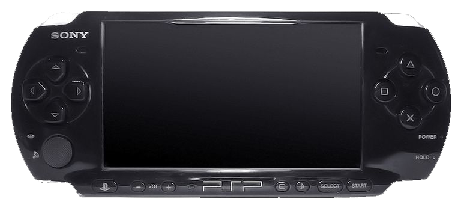

A friend of mine was selling his PSP, and I mistakingly thought that the PSP was a console superior to my trusty Fire Red. So I gathered all of my GameBoy Games and Accessories and headed to the local GameStop to see what I could get for it. :'(
I sold it all.
I then turned around and bought the PSP from my friend and tried to be cool. I played FIFA Street, and Iron Man, instead of faithfully searching to Catch 'em all. It was fun, don't get me wrong but it definitely wasn't as fun, and I never new how much I would one day miss good ol' Fire Red.